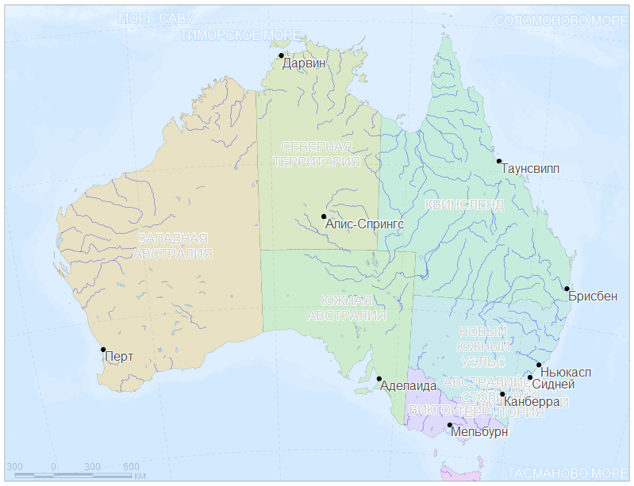
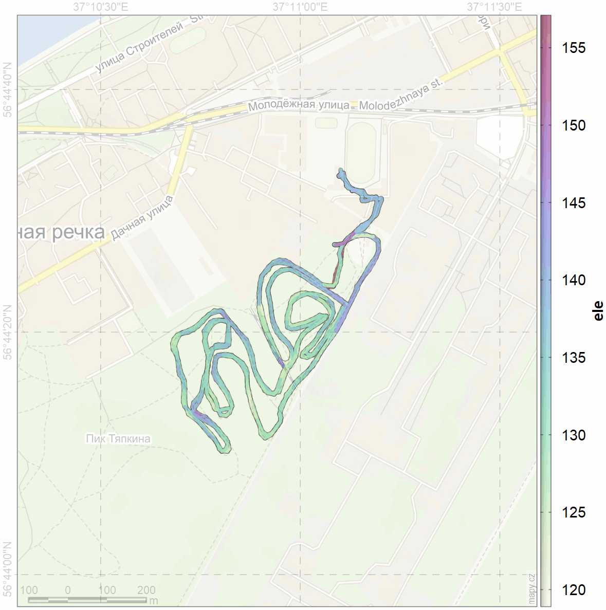
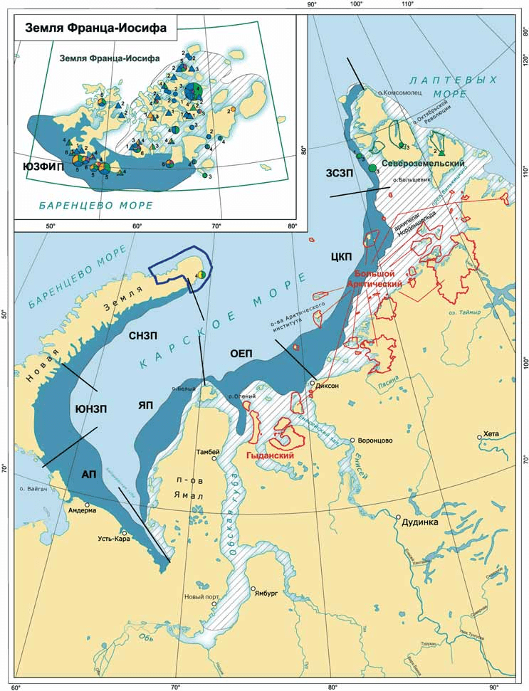

Домашние задания
К 22 февраля
Оформление картоосновы
| Выдано | 15 февраля |
| Сдача | 21 февраля 09:00 Мск UTC+03 |
| Программное обеспечение | QGIS |
| Цель | Научиться оперировать с инструментами QGIS для получения данных и оформления слоев проекта, включая стили оформления и подписи топонимов |
| Задание | На основе данных Natural Earth 1:10m cоздать картооснову, ориентируясь на территорию, охватывающую Карелию и Мурманскую области и на Ваш район исследований. Желательно включить административные границы, батиметрию и контуры высот. Экспортировать через Export Image или Print Layout изображения, соответствующих русскоязычным журнальным требованиям, с различным пространственным охватом: 1) только Кольский п-ов, 2) вместе Карелия и Мурманская обл, 3) свой район работ для описания изучаемой территории в разделе «Методы», 4) свой район работ для использования в качестве подложки для «Результатов». |
| Отчетность | 1. PNG/TIFF/PDF с охватом Кольского полуострова 2. PNG/TIFF/PDF с охватом Карелии и Мурманской обл. 3. PNG/TIFF/PDF района исследований с для раздела «Методы». 4. PNG/TIFF/PDF района исследований как подложка для «Результатов». |
| Подсказки | Данные Natural Earth World GIS Data. Посмотреть также OSM данные по регионам России на сайте проекта Geofabrik для крупномасштабных карт. Обратить внимание на присутствие в атрибутивной таблице русскоязычных полей. |

К 14 марта
Визуализация в R
| Выдано | 07 марта |
| Сдача | 13 марта 09:00 Мск UTC+03 |
| Программное обеспечение | R. |
| Цель | Научиться пользоваться инструментами R для обработки и визуализации данных |
| Задание | Отобразить Австралию или свой регион работ, используя данные Natural Earth World GIS Data 1:10m. |
| Отчетность | 1) Рисунок PNG/PDF. Если PNG, постарайтесь задать DPI. 2) R-скрипт; директория с данными Natural Earth должна быть записана в переменную root. |
| Подсказки | Обработка данных – пакет sf. Визуализация – пакеты tmap, ggplot2 (функция geom_sf). Ненаслаивающиеся подписи - пакет ggrepel. |

К 04 апреля
Анализ траектории
| Выдано | 28 марта |
| Сдача | 03 апреля 09:00 Мск UTC+03 |
| Программное обеспечение | R, QGIS |
| Цель | Научиться анализу пространственных данных на примере обработки траекторий с GPS. |
| Задание | Проанализировать записанный трек лыжной прогулки. Выделить участки трассы и подхода/ухода между трассой и базой (раздевалкой). Оценить такие характеристики, как длина круга, средняя скорость прохождения круга, время начала и окончания круга, неравномерность перемещения. Определить максимальное удаление от базы. |
| Отчетность | Файл с отчетом или презентацией результатов анализа (MS Word, MS Powepoint, R markdown). |
| Подсказки | Данные взять отсюда. Записи (таблица атрибутов) содержат информацию по высоте, которая может быть использована для объяснения неравномерности скорости движения. |

К 25 апреля
Оцифровка данных
| Выдано | 04 апреля |
| Сдача | 24 апреля 09:00 Мск UTC+03 |
| Программное обеспечение | инструменты: QGIS, анализ: QGIS или R. |
| Цель | Научиться пользоваться инструментами QGIS для геоприязки и оцифровки данных |
| Задание | Оценить площадь каждой из обозначенных в легенде заприпайных полыней Карского моря из «Атласа биологического разнообразия морей и побережий российской Арктики» WWF России*, стр. 35. Береговую линию не оцифровывать, а вырезать по слою из набора Natural Earth World GIS Data 1:10m. |
| Отчетность | 1) PNG/TIFF/PDF с результатом привязки, 2) ESRI Shapefile (или любой GDAL формат) с результатом отрисовки, 3) таблица площадей полыней по результатам оцифровки. |
| Подсказки | Обрезку по береговой линии можно сделать либо маскированием по океану, либо исключением суши, см. занятие по операциям с геометрией. |

| СНЗП | ЮНЗП | АП | ЯП | ОЕП | ЦКП | ЗСЗП | |
|---|---|---|---|---|---|---|---|
| Наталия Сопилко | 17688 | 28150 | 33533 | 26032 | 26496 | 39238 | 9060 |
| Полина Ильина | 18990 | 28560 | 33339 | 26829 | 27521 | 41850 | 8748 |
| СНЗП | ЮНЗП | АП | ЯП | ОЕП | ЦКП | ЗСЗП | |
|---|---|---|---|---|---|---|---|
| Наталия Сопилко | -1 | 28150 | 33533 | 26032 | 26496 | 39239 | 9060 |
| Полина Ильина | 18991 | 28566 | 33331 | -1 | 27518 | 41852 | 8748 |
| СНЗП | ЮНЗП | АП | ЯП | ОЕП | ЦКП | ЗСЗП | |
|---|---|---|---|---|---|---|---|
| Наталия Сопилко | 195 | 81 | 70 | 44 | 49 | 62 | 42 |
| Полина Ильина | 471 | 283 | 314 | 51 | 74 | 116 | 75 |